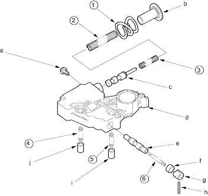

Valve Body
|
14-186 |
 |
|
SPRING SPECIFICATIONS
| No. | Spring | Standard (New)-Unit: mm (in.) | |||
| Wire Dia. | O.D. | Free Length | No. of Coils | ||
| (1) | Stator reaction spring | 4.5 (0.177) | 35.4 (1.394) | 30.3 (1.193) | 1.9 |
| (2) | Regulator valve spring A | 1.9 (0.075) | 14.7 (0.579) | 77.4 (3.047) | 15.2 |
| (3) | Regulator valve spring B | 1.8 (0.071) | 9.6 (0.378) | 44.0 (1.732) | 12.6 |
| (4) | Cooler relief valve spring | 1.0 (0.039) | 8.4 (0.331) | 33.8 (1.331) | 8.2 |
| (5) | Torque converter check valve spring | 1.0 (0.039) | 8.4 (0.331) | 33.8 (1.331) | 8.2 |
| (6) | Lock-up control valve spring | 0.8 (0.031) | 6.0 (0.236) | 38.4 (1.512) | 30.3 |